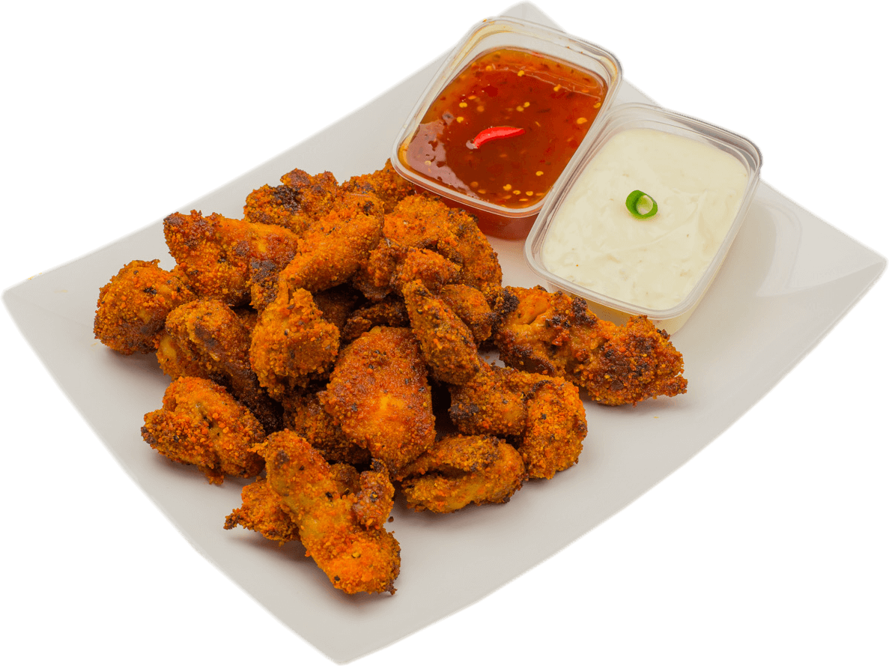

Welkom bij de
Krokante Kip!
Welkom op de vernieuwde website!
De korkante kip heeft een hele website make-over gekregen. U kunt nu onze heerlijke recepten vinden op de recepten pagina. Daarnaast hebben we nu ook ons menu toegevoegd. Dit menu bevat nu nog alleen onze populairste gerechten. Maar houdt onze website in de gaten want dat gaat snel veranderen! U kunt nu op de contactpagina onze openingstijden vinden, iets wat op onze vorige website nog ontbrak.
We hopen dat u zich makkelijk de weg kunt vinden op deze website. Vragen? Vul ons contactformulier in op de contactpagina.
Nieuwe openingstijden!
Vanaf nu zijn we ook zondags open! Kom lekker op een zondagmiddag even genieten van ons heerlijke menu!
Een heerlijke nieuwe verwennerij
Heeft u ooit eens van kibbeling gehoord? Vast wel. Wat nou als ik zeg dat er mensen zijn in Zuid-Holland die heel wat anders kunnen verwachten wanneer u het heeft over kibbeling. In Zuid-Holland is kippeling namelijk erg populair. U leest het goed, ik heb het over kippeling met een p. Het is een erg populaire snack in Zuid-Holland. Vooral in Zoetermeer, Rotterdam en Lansingerland is het erg bekend. Kippeling zijn in feite kleine stukjes kippendijfilet gemarineerd en gebakken in de oven. U kunt hier nog een lekker sausje bij nemen maar persoonlijk vind ik het zonder lekkerder. Wilt u dit heerlijke tussendoortje ook proberen? Kom gerust langs en geniet! Of, u kunt naar onze recepten pagina waar u het zelf kunt maken. Ook een grote aanrader! 